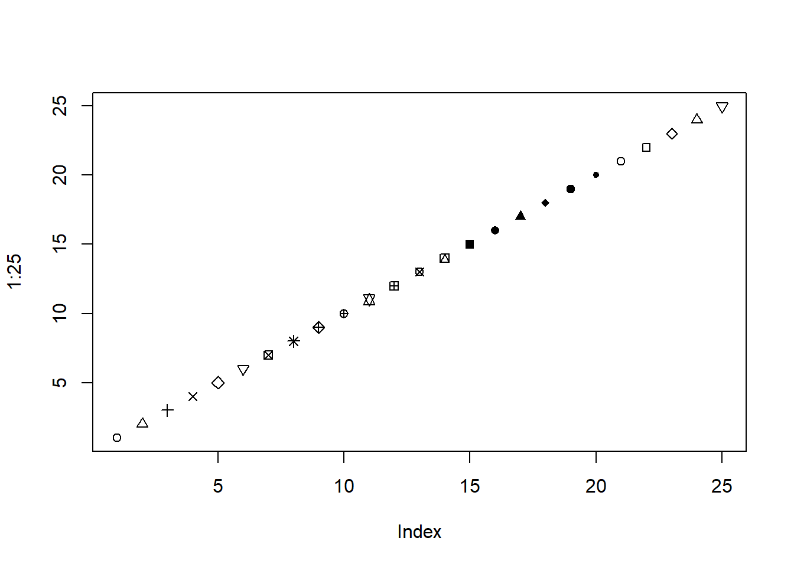

D Bookdown Tests
A few tests to make sure bookdown is rendering things correctly.
D.2 Test Figure
plot(1:25, pch = 1:25)

Figure D.1: Test figure.
The reference to Figure D.1 is implemented correctly.
D.3 Test CRAN Link
The package link to mniw works correctly.
D.5 Test References
The reference to Agresti (2015) works as expected.
References
Agresti, Alan. 2015. Foundations of Linear and Generalized Linear Models. New York, NY: John Wiley & Sons.